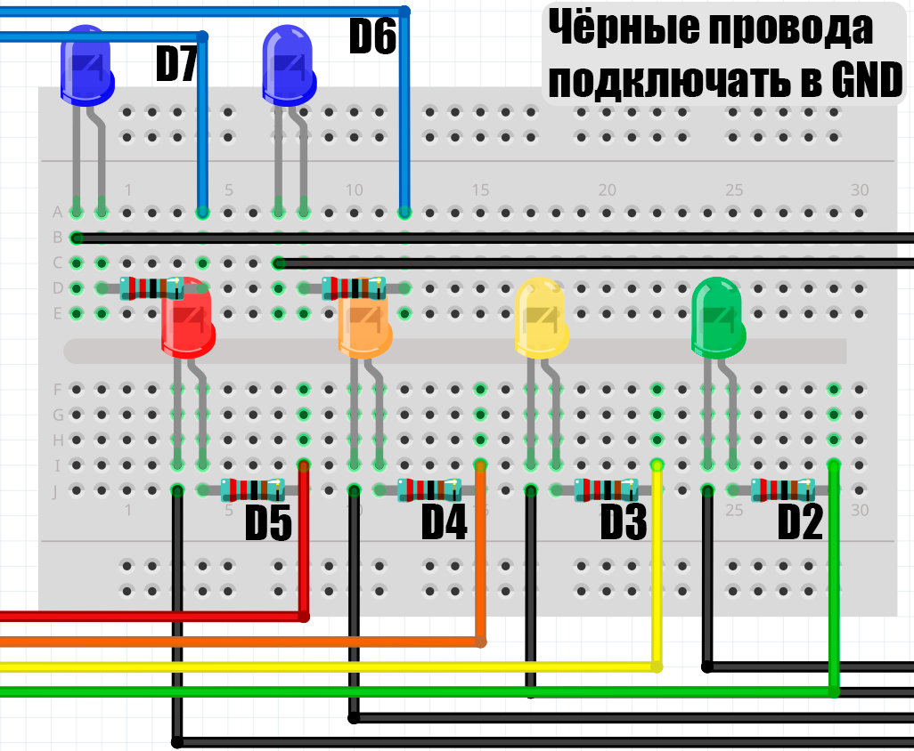
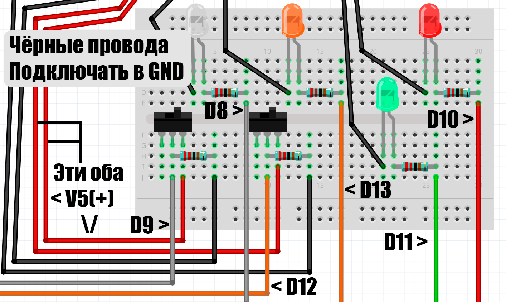
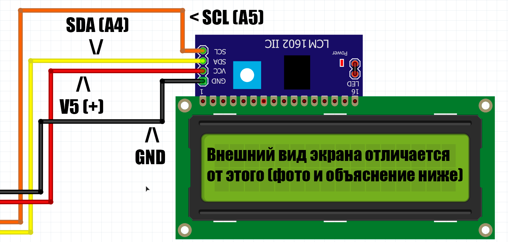
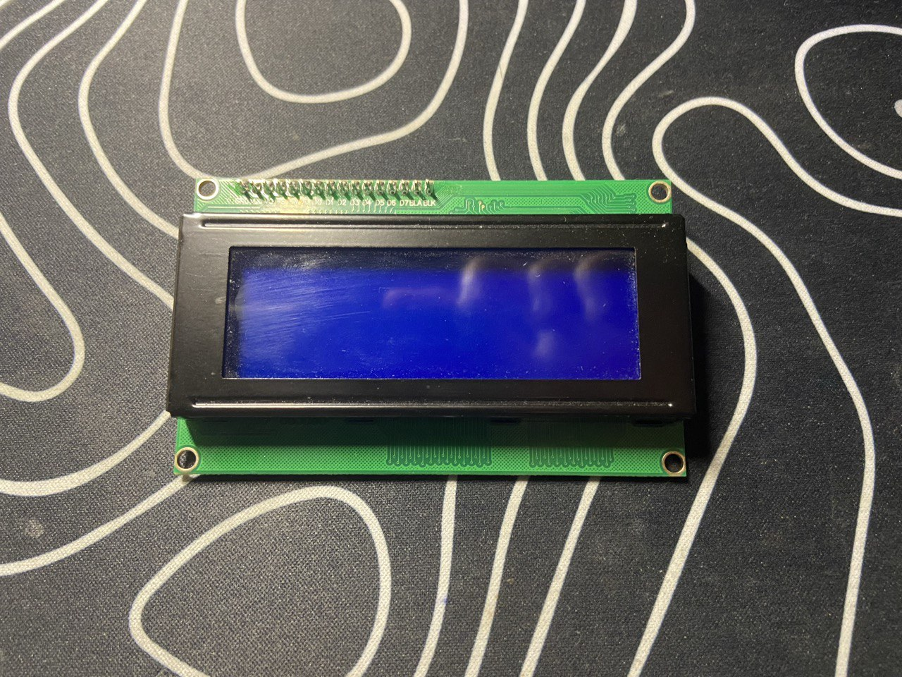

Описание:
Мини игрушка с симуляцией реактора, есть нагрев, есть охлаждение, симуляция выроботки энергие в виде отображения на экране, ниже представвленно нескольно видео, что происход при перегреве(3800градусов) и при переохлождении (-273 градуса)
Перегрев:
Переoхлаждение:
Основные элементы управления:
Немного опишу, что, где и зачем. Где что находится можно посмотреть на картинке, там стрелочками все показано. Индикатор состоянияя показывает работает реактор или нет. Индикатор выроботки показывает вырабатывается энергия или нет. Панель индикатора сстоит из 4 светодиодов и показывает примерную мощьность в процентах. Индикатор хладогента, асистента и запасного питания показывает включены элементы или нет. Индикатор опастности включается при 3700 градусов, нужен для того чтобы вы не забыли охладить реактор, иначе он перегреется. Тумблера хладогента и асистена, нужны чтобы включать и выключать элементы.
Инструкция по сборке:
Детали нужные вам для сборки:
Примерная стоимость всех деталей: 2 593 рублей
Всё ссылки можно найти тут
Приступим к сборке:
Все провода подписанны по номеру порта на ардуино, если вы начинающий в этой теме перейдите на гайд по базе для моих проектов.
На схемах все показано стерлочками и подписанно текстом, всё чёрные провода подлючаются в GND(Заземление), вровода которые подключаются в 5V подписанны.
Схема в полной сборке будет выглядить как-то так:

Сборка панели отображения(верхняя панель):
Сборка панели управления(нижняя панель):
Тут в 5V подключать красные провода уходяшиие от тумблеров
Сборка Экранчика
В программе для разметки не было экрана 2004 ниже пркреплю фото как выглядит нужный нам экранчик
Вот и закончилась наша сборка, приступим к коду, если вы незнаете как загрузить код на плату ардуино, то смотрите гайд по базе для моих проектов.
Нужные библиотеки: LiquidCrystal I2C
Если вы всё паравильно собрали то у вас всё должно заработать а если нет... можете писать в сообщения телеграм канала или в дс сервер по кнопкам ниже: